📚 Примеры разметки
Что НЕ является инфографикой, что берём и как размечать.
Что НЕ берём — контрпримеры
Эти изображения не являются инфографикой и не подходят для сбора. Они помогут быстро распознать типичные ошибки.
Фото с текстовой плашкой
Скриншоты интерфейсов без композиции
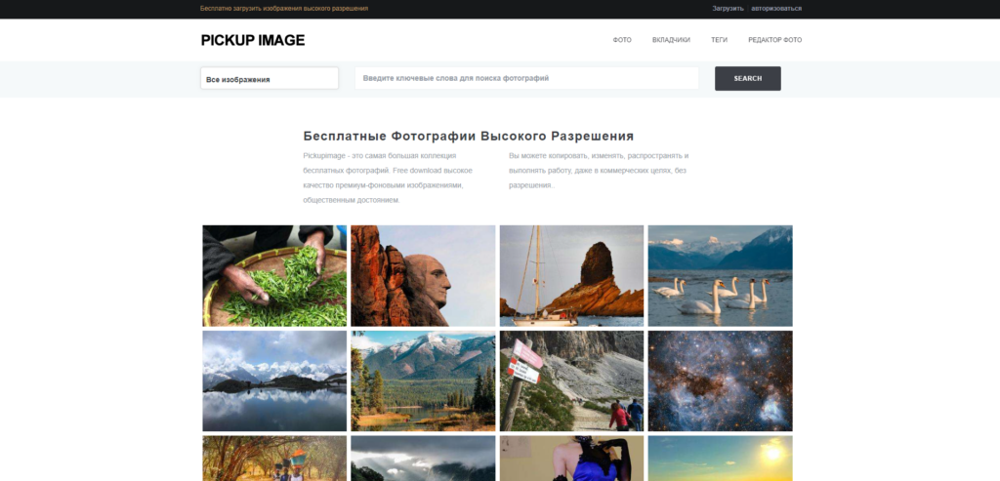
Рекламные баннеры
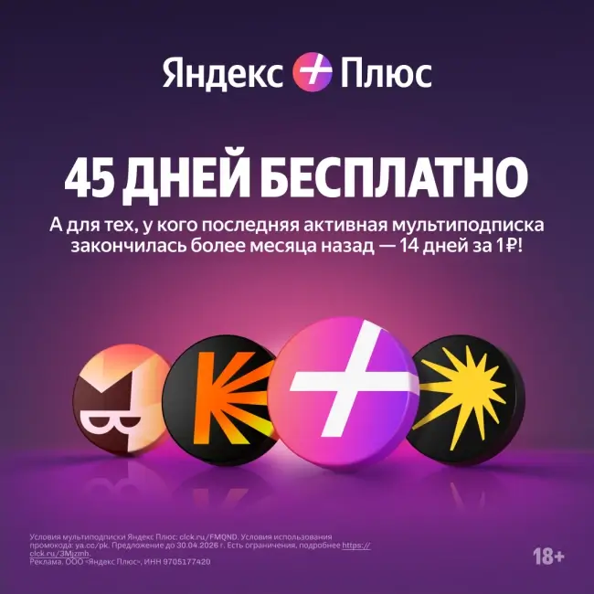
Художественные постеры
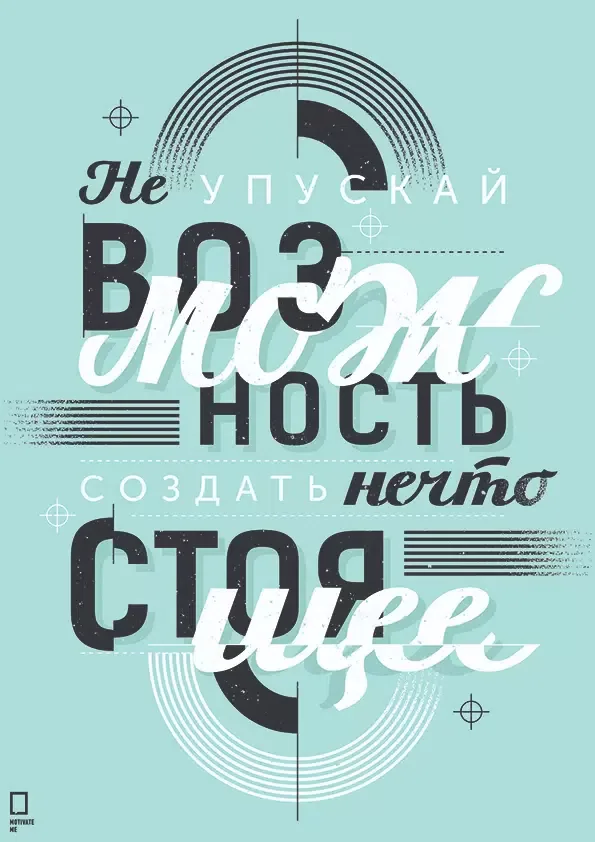
Страницы книг со сплошным текстом
Фото инфографики с искажениями
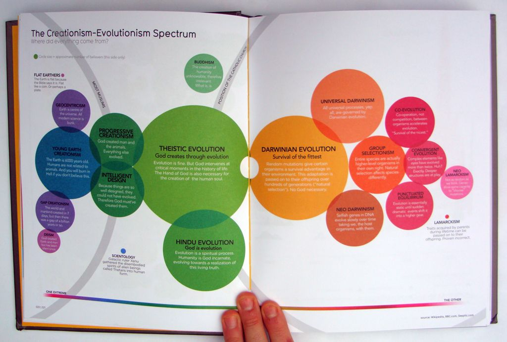
Реклама инфографики — видна среда
ИИ-генерация — поплывшие буквы
Имитация инфографики «в среде»
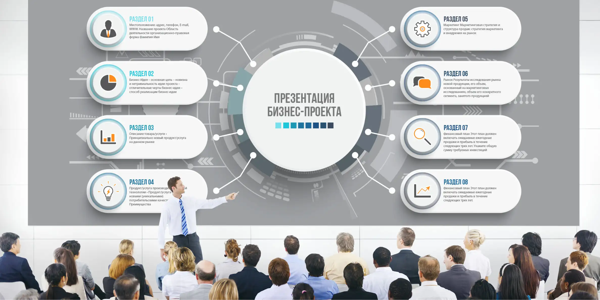
Фото инфографики — на переднем плане человек
ИИ-блок-схема
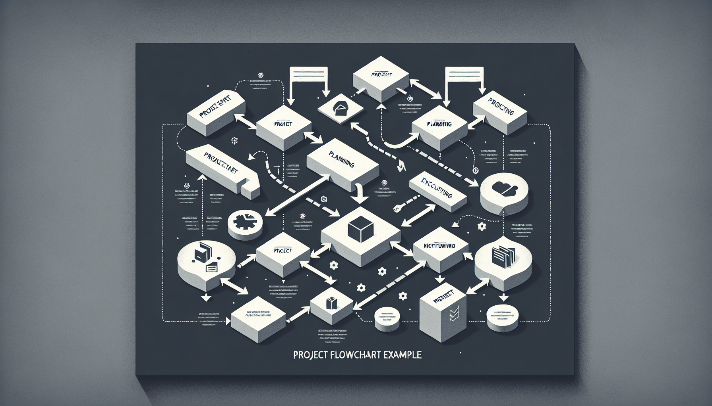
Слайд с диаграммами — нечитаемый текст
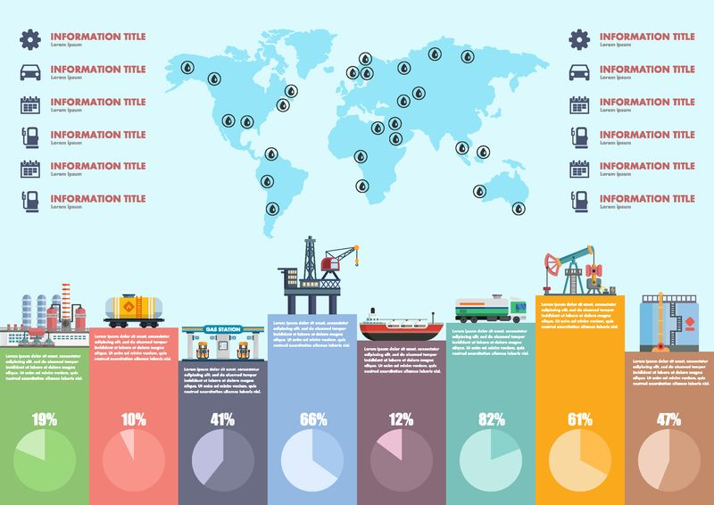
Что берём — примеры
Эти изображения подходят для сбора: есть структура, читаемый текст, визуальные связи.
Пошаговая инструкция — Roadmap
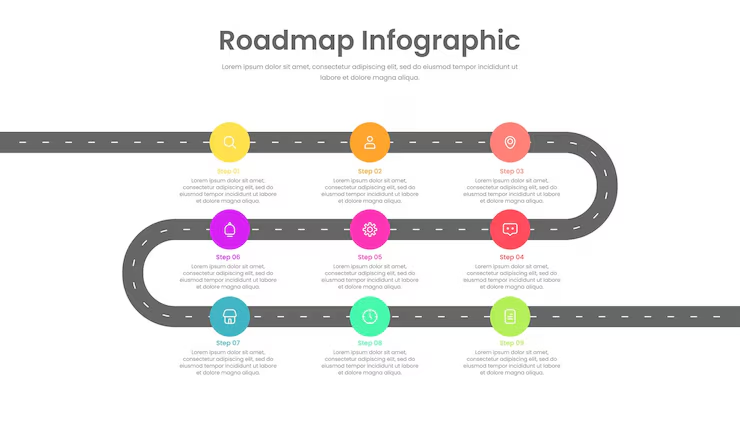
CALDO Tech — доходы и рекламные расходы
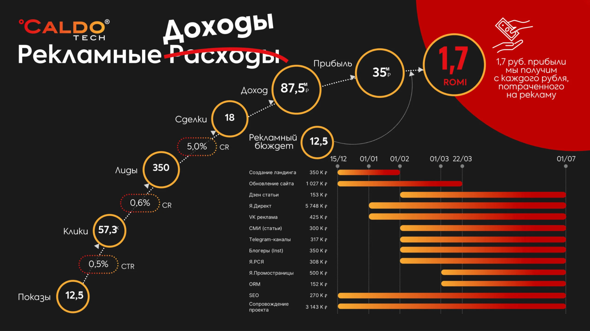
Карта деловой среды — бизнес-слайд
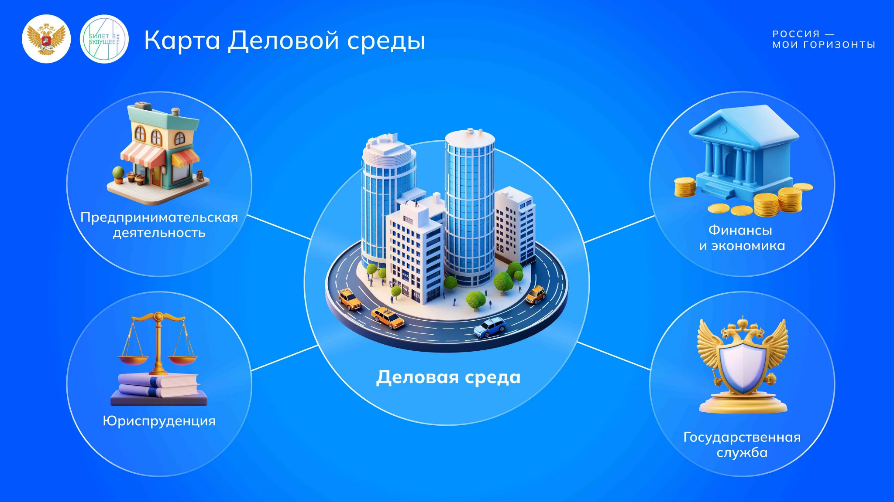
Разобранные кейсы
Три разобранных примера — как размечать инфографику по вопросам из раздела 6 ТЗ.
Кейс 1. Видеореклама в России Пример
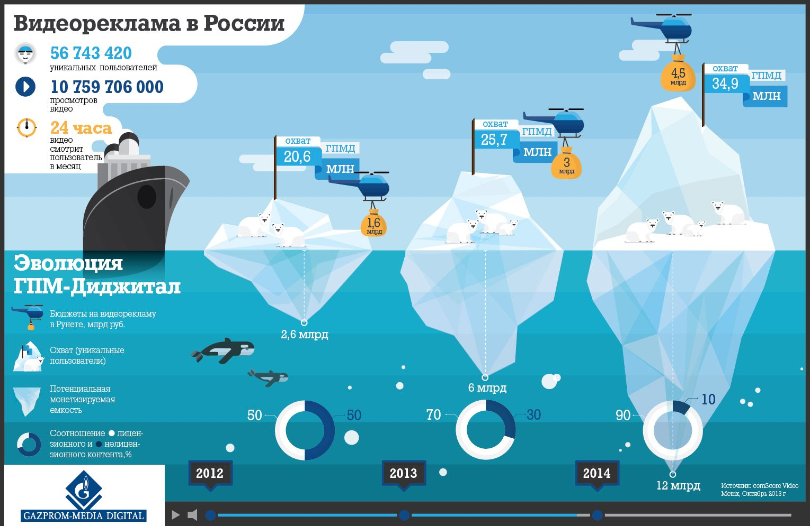
- Категория инфографики. Презентационный слайд.
- Подкатегория. Визуальные слайды (visual slides).
- Тема / предметная область. Медиаплатформа.
- Алфавит. Кириллица.
- Согласованы ли текст и визуал? Да, согласованы.
- Понятность структуры. Высокая.
- Помогает ли в понимании? Сильно помогает.
- Информационная насыщенность. Высокая.
- Лишний декор? Нет, визуал служит информации.
- Числовые данные? Да.
- Таблица? Нет.
- График / диаграмма? Да.
- Стрелки / связи? Нет.
- Пошаговая последовательность? Нет.
- Смысловые секции? Да.
- Смешение типов? Да.
- Логотип / брендирование? Да.
Кейс 2. Panama Canal Traffic Пример
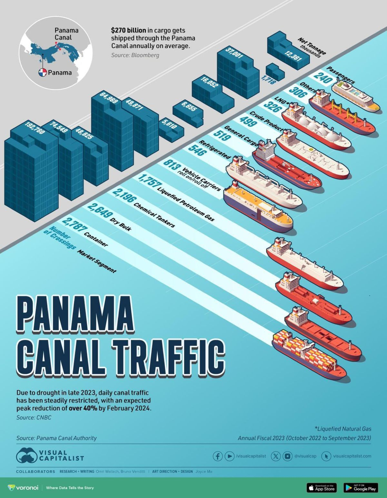
- Категория инфографики. Графики и диаграммы данных.
- Подкатегория. Столбчатые диаграммы (bar).
- Тема / предметная область. Бизнес.
- Алфавит. Латиница.
- Согласованы ли текст и визуал? Да, согласованы.
- Понятность структуры. Высокая.
- Помогает ли в понимании? Сильно помогает.
- Информационная насыщенность. Высокая.
- Лишний декор? Нет, визуал служит информации.
- Числовые данные? Да.
- Таблица? Нет.
- График / диаграмма? Да.
- Стрелки / связи? Нет.
- Пошаговая последовательность? Нет.
- Смысловые секции? Да.
- Смешение типов? Да.
- Логотип / брендирование? Да.
Кейс 3. Street-Style Chicken Rolls Пример
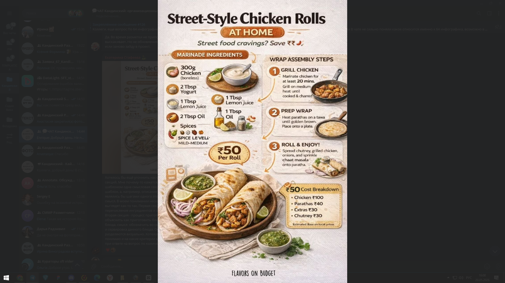
На данном изображении мы видим 3 смысловые секции: цена и название, пошаговая инструкция приготовления, подробный рецепт.
Примеры по категориям инфографики
Здесь будут примеры по 9 категориям: графики и диаграммы, схемы процессов, mind maps, презентационные слайды, плакаты, таблицы, инструкции, навигационные схемы, чек-листы. Раздел в работе — картинки добавим на следующем этапе.
Брендирование
Здесь будут примеры брендирования: логотип, фирменные цвета, шрифт. Раздел в работе.